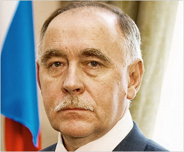

<style type="text/css">
    html, body {padding:0;margin:0;font-family:"Helvetica Neue",sans-serif;font-size:16px;line-height:21px}
    h1 {font-size:40px;line-height:40px;font-weight:normal;font-family:"Helvetica Neue",sans-serif;margin-bottom:10px;}
    .subheader-gray {color: #7f7f7f;margin-bottom:40px;}
    .padding {padding-left:20px;margin-bottom:30px;}
    .text {margin-left:392px;}
</style>

<h1 style="margin-bottom:30px;">Виктор Петрович Иванов, биография</h1>

<div class="text">
    <p>Виктор Петрович Иванов родился 12 мая 1950 года в Новгороде. После окончания Ленинградского электротехнического института связи имени М.А. Бонч-Бруевича служил в Советской Армии, затем работал инженером научно-производственного объединения «Вектор» в Ленинграде.</p>
    <p>С 1977 года - в органах государственной безопасности, где прошел путь от оперуполномоченного районного отдела Управления КГБ СССР по Ленинградской области до заместителя директора ФСБ России.</p>
    <p>В 1987-1988 годах находился в служебной командировке в Демократической Республике Афганистан.</p>
    <p>С 2000 года по 2004 год работал заместителем руководителя Администрации Президента Российской Федерации. С 2004 года по май 2008 года - помощник Президента Российской Федерации.</p>
    <p>15 мая 2008 года Указом Президента Российской Федерации назначен Директором Федеральной службы Российской Федерации по контролю за оборотом наркотиков.</p>
    <p>25 мая 2008 года Указом Президента Российской Федерации утвержден членом Совета Безопасности Российской Федерации.</p>
    <p>Удостоен государственных наград, в том числе орденов «За заслуги перед Отечеством» IV степени, «За военные заслуги» и Почета. Женат, имеет сына и дочь.</p>
</div>
